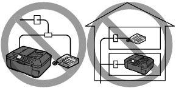
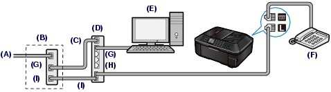
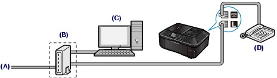
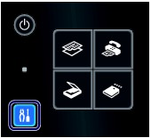
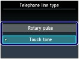

For the basic connection of the machine, refer to the printed manual: Getting Started. This guide describes other typical connections.
The machine cannot send/receive faxes if the connection is incorrect. Connect the machine correctly.
 Setting the Telephone Line Type
Setting the Telephone Line Type
 Important ImportantIf the Power Disconnects Unexpectedly
If the power disconnects, the following will apply:
|
 Connecting Various Lines
Connecting Various LinesThese are examples and could not be guaranteed to suit every connecting condition. For details, refer to the instruction manual supplied with the network device (control devices such as an xDSL (Digital Subscriber Line) modem or terminal adapter) you are connecting to this machine.
| Important Do not connect fax machines and/or telephones in parallel (US and Canada only)
- If you pick up the handset of the telephone that is connected in parallel during fax transmission or reception, the fax image may be corrupted or a communication error may occur. - Such services as Caller ID, etc. may not operate properly on the telephone. 
|
 Note Note
Connecting the telephone
For users in the UK
Attach the B.T. adapter to the modular cable connecting the external device, then connect the B.T. adapter to the (External device) jack. |
 Connecting to an Internet Telephone
Connecting to an Internet Telephone
(A) Digital Subscriber Line
(B) xDSL modem (splitter may not be built-in to the modem)
(C) WAN (Wide Area Network)
(D) Broadband router compatible with Internet Telephone
(E) Computer
(F) Telephone or answering machine
(G) LAN (Local Area Network)
(H) TEL
(I) LINE
* Port configurations and names may vary depending on the product.
| Note
|
Connecting to an xDSL
(A) Analog Subscriber Line
(B) xDSL modem (splitter may not be built-in to the modem)
(C) Computer
(D) Telephone or answering machine
| Important
|
| Note
|
Connecting to an ISDN LineFor details on ISDN (Integrated Service Digital Network) connection and settings, refer to the manuals supplied with your terminal adapter or dial-up router.
Setting the Telephone Line TypeBefore using your machine, make sure you set the correct telephone line type for your telephone line. If you are unsure of your telephone line type, contact your telephone company. For xDSL or ISDN connections, contact the telephone company or service provider to confirm your line type.
| Note
For details, refer to the on-screen manual: Advanced Guide. |
Display the Telephone line type screen.
(1) Press the Setup button.

(2) Select Device settings , and press the OK button.
(3) Select FAX settings, and press the OK button.
(4) Select FAX user settings, and press the OK button.
(5) Select Telephone line type, and press the OK button.
Select the telephone line type.
(1) Select the telephone line type.

Rotary pulse: Suitable for pulse dialing.
|
Touch tone: Suitable for tone dialing.
|
(2) Press the OK button.
Press the FAX button to return to the fax standby screen.